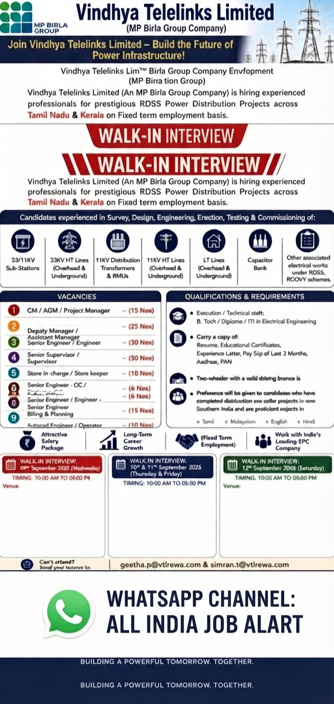

Vindhya Telelinks Limited, an MP Birla Group company, has announced multiple employment opportunities for experienced professionals associated with power infrastructure and related engineering projects. The company is conducting walk-in interviews during September 2026 for candidates with experience in survey, design, engineering, erection, testing and commissioning activities.
This recruitment drive is particularly important for candidates looking for opportunities in electrical engineering, transmission and distribution projects, substations, high-tension lines, low-tension lines, transformers, quality control, safety, billing, planning, stores and AutoCAD-related roles. Eligible candidates can attend the walk-in interview at the respective locations according to the schedule mentioned below.
Get daily private company jobs, engineering vacancies, walk-in interviews and latest job updates.
JOIN WHATSAPP CHANNELVindhya Telelinks Limited is inviting experienced and technically qualified professionals for its power distribution and infrastructure projects. According to the recruitment information provided in the job poster, candidates with qualifications such as B.Tech, Diploma and ITI in Electrical Engineering are eligible for several technical positions. The company is looking for candidates who have relevant field experience and the ability to work on infrastructure and EPC projects.
Candidates with previous experience in survey, engineering, erection, testing, commissioning, transmission lines, substations, transformers and associated electrical works may find suitable opportunities in this recruitment drive. The company has also announced positions in quality control, safety, stores, billing, planning and AutoCAD operations.
Applicants are advised to carefully check the experience requirement for their preferred position before attending the interview. Candidates should also carry their updated resume and all important employment and educational documents.
| Sr. No. | Position | No. of Vacancies |
|---|---|---|
| 1 | GM / AGM / Project Manager | 15 Nos. |
| 2 | Deputy Manager / Assistant Manager | 25 Nos. |
| 3 | Senior Engineer / Engineer | 30 Nos. |
| 4 | Senior Supervisor / Supervisor | 50 Nos. |
| 5 | Store In-charge / Store Keeper | 10 Nos. |
| 6 | Senior Engineer – QC / Engineer – QC | 6 Nos. |
| 7 | Safety Officer | 6 Nos. |
| 8 | Senior Engineer / Engineer – Billing & Planning | 15 Nos. |
| 9 | AutoCAD Engineer / Operator | 10 Nos. |
The recruitment poster indicates that the company is looking for professionals experienced in various power infrastructure activities. Candidates with experience in the following areas may be suitable for the available positions:
Candidates who have worked on power distribution projects or similar electrical EPC projects can benefit from this recruitment opportunity. Preference may be given to professionals who have completed similar projects in Southern India and who have the required technical skills.
Candidates applying for technical and engineering positions should have the required educational qualification and relevant practical experience. The recruitment poster mentions B.Tech, Diploma and ITI qualifications in Electrical Engineering for execution and technical staff positions.
Candidates attending the walk-in interview should ensure that they meet the requirements of the position for which they are applying. Experience requirements can vary depending on the designation and responsibility level.
Candidates should carry all relevant documents while attending the interview. The recruitment poster specifically asks candidates to carry important professional and identification documents.
A valid two-wheeler licence is mentioned as mandatory for candidates required to perform field duties. Candidates should keep both original documents and photocopies ready before attending the recruitment process.
Join All India Job Alert for private company jobs, construction jobs, engineering jobs and walk-in interview updates.
JOIN ALL INDIA JOB ALERTInterested candidates who are unable to attend the walk-in interview may send their updated resume directly to the recruitment email addresses mentioned in the official recruitment poster.
Send Your Updated Resume To:
Email 1: geetha.p@vtlrewa.com
Email 2: simran.t@vtlrewa.com
Candidates should clearly mention the position they are applying for in their resume or email subject line. For example, a candidate applying for the position of Senior Engineer may mention “Application for Senior Engineer” in the email subject.
Before sending the application, candidates should update their CV with their latest work experience, current company, designation, technical skills, qualifications and contact information. Candidates attending the walk-in interview should carry the required documents mentioned above.
Candidates are advised to reach the interview venue during the specified timing of 10:00 AM to 05:00 PM. Carry an updated CV and all required documents. Candidates should apply only for positions relevant to their qualifications and professional experience.
This recruitment drive provides opportunities for experienced professionals in power infrastructure and electrical EPC projects. Candidates with experience in substations, HT and LT lines, distribution transformers, RMUs, quality control, safety, billing, planning and engineering execution may check the available positions carefully.
Applicants should verify all information before travelling to the interview venue. Job seekers should never pay any unauthorized person for a job opportunity. All candidates should use the official contact information provided in the recruitment advertisement for application and interview-related communication.
Get regular updates about private company jobs, engineering jobs, construction jobs and walk-in interviews across India.
JOIN WHATSAPP CHANNEL NOW